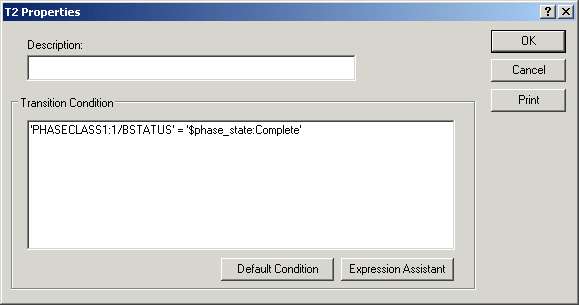
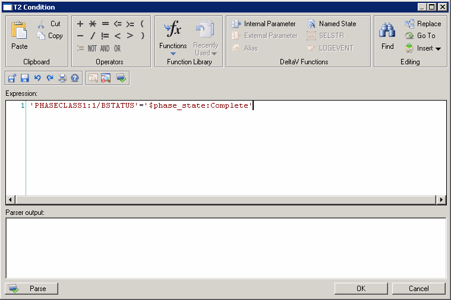

Configuring a transition
When you configure a transition, Recipe Studio displays the Transition Editor. Set the transition condition using this dialog. You can use the Default Condition button to set the transition condition. When this option is selected, the default transition condition is calculated by the system based on the steps leading to the transition. You can override that default transition condition by editing the condition directly.
If the step prior to the transition is STIR:1, the transition condition defaults to 'STIR:1.BSTATUS' = '$RECIPE_STATE:COMPLETE'. If two steps, STIR:2 and HEAT:1, are combined with a parallel convergence into a transition, the default is 'STIR:2.BSTATUS' = '$RECIPE_STATE:COMPLETE' AND HEAT:1BSTATUS' = '$RECIPE_STATE:COMPLETE'.
The defaulting transition condition is recalculated when the steps leading to that transition are changed, added or deleted. If you override the defaulting condition, some aspects may change when the preceding step is modified (for example, step name). It is recommended that all transition conditions be reviewed when making changes to the preceding steps.
This feature applies to all but the first transition in the diagram. The first transition references the Start step, which has no associations.

If you are not using the Default Condition, you must write an expression to trigger the transition condition, which allows the PFC to move to the next step.

Click the Expression Assistant button to start the Expression Editor. An expression is structured text that represents a calculation and has a specific syntax.